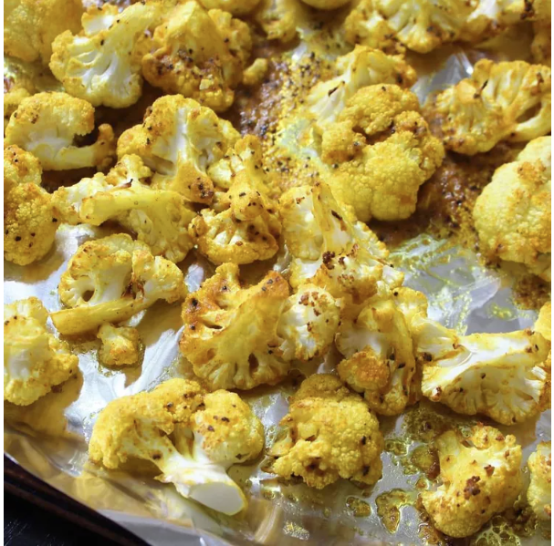

Pan Roasted Cauliflower with Curry

Description
This roasted cauliflower with curry is simple and melts in your mouth. It is a perfect as a spicy vegan side dish or even as a quick and easy main course.
Ingredients
- 3 tablespoons olive oil
- 1 tablespoon yellow curry powder/li>
- 1 tablespoon lemon juice
- 1 teaspoon salt
- ½ teaspoon ground black pepper
- 1 pound cauliflower florets, cut into 1/2-inch slices
Steps
- Preheat the oven to 400 degrees F (200 degrees C). Line a baking sheet with aluminum foil.
- Combine olive oil, curry powder, lemon juice, salt, and pepper in a bowl. Add cauliflower and toss until well coated. Transfer to the prepared baking sheet and spread in a single layer.
- Bake in the preheated oven until golden and crispy, about 25 minutes.
Home